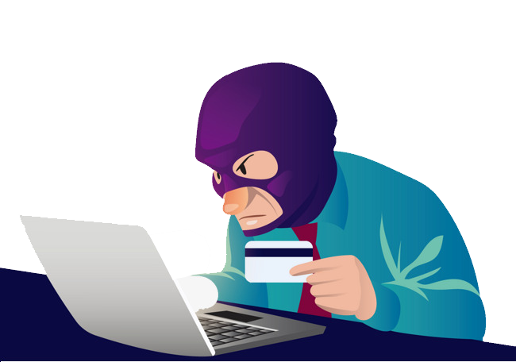

How to Protect From Social Engineering:
Determining Secure Info
Social engineering issues are recently on the rise, and enterprises are paying the price for not keeping their documents secure. The system administrator of any company needs to be aware of the possible threats that appear in society today. Contracts and Commercial Documents are few of the things that need to be kept secure from any outsiders, along with sensitive information of the employees. Most of the time, people will keep their company documents safe by allowing only a few people to access higher tier documents.
Keeping Software Relevant
Not only should your software be up to date for the purposes of productivity, but certain add-ons can make protecting yourself from suspicious users that much easier. For example, Social Engineering Land Mines, or SELM, are a great way to block out attempts of inexperienced hackers. The slightest protection could help make the biggest difference when it comes to corporate safety. There shouldn't be any room for neglecting those important files
“SELMs refers to system traps laid to stop or expose an attack. As the name suggests, they are usually set to ‘explode’, by surprise, in an attacker’s face. In the process, it exposes the attack’s secrecy, crippling the process and eventually stop the attack. In addition, SELM will notify the victim’s system and the victim of the attempt to enable additional security measures to be implemented immediately” (Ghafir, 2016, p. 148).
In addition, there are many companies that like to dedicate their efforts to selling phishing protections which the system administrator can decide upon for their company.
